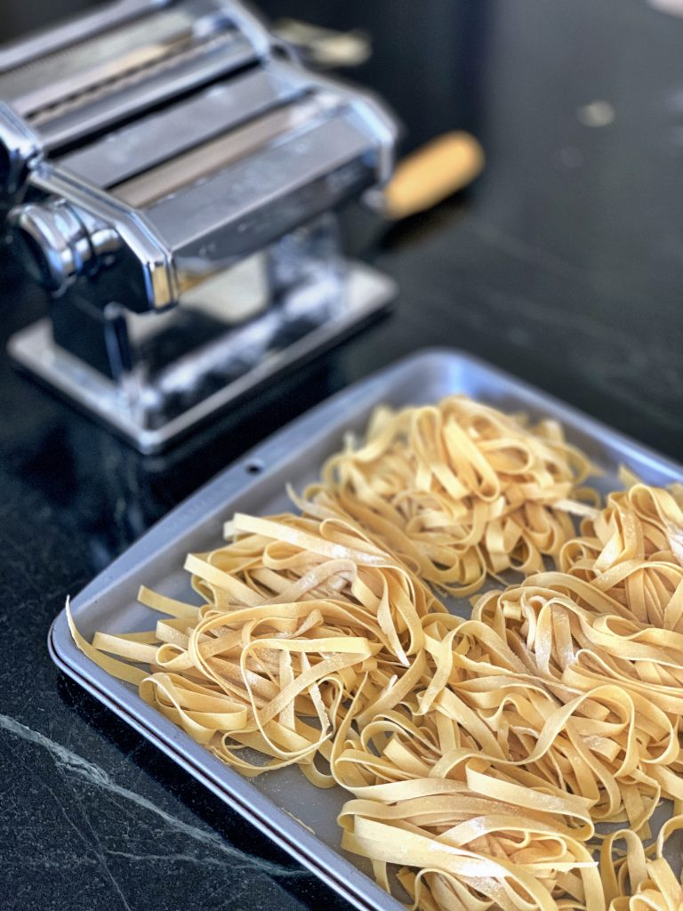

Homemade Pasta
Recipe makes about a pound of pasta!

Ingredients
- 2–1/2 cups of unbleached all purpose flour
- 4 large eggs
Steps
- In a large bowl add 2 cups of the unbleached all-purpose flour, and make a well in the center. Break 4 large eggs into the well. Beat the eggs lightly with a fork for about 1 minute, then start to work a little of the flour from the edges in to the eggs, until the eggs are no longer runny. Using your hands mix the flour and eggs thoroughly into a ball. If mixture is too wet and sticky add extra flour 1 tablespoon at a time, until it is manageable.
- Transfer the ball to a lightly floured work surface and knead: flatten the dough with the palm of your hands, fold it back towards you, rotate it a half turn and repeat. Continue this process for 8 to 10 minutes until the dough is smooth and firm. Shape it into a ball, wrap it in plastic wrap and let it rest for 30 minutes.
- Anchor the pasta machine to your work surface following the manufacturer’s instructions, and set the rollers to the widest setting. Cut the ball into 4 pieces. Take one piece and flatten it into a half-inch disk. Pass the disk through the rollers, turning the crank with your hand. Fold the dough into thirds and roll again. Repeat this 2 more times. Move the dial to the next notch, narrowing the rollers and run the dough through them. Continue this process, narrowing the rollers by one setting on the dial each time until you reach the second to last setting. Lay the flattened dough to the side and repeat the procedure with the other 3 pieces.
- Most pasta machines come with cutters to make two shapes of noodles, fettuccine and tonnarelli. To make fettuccine take the sheets of pasta in the same order you flattened them, cut them in half and run the halves through the broader set of cutters on the machine. Transfer the cut pasta to a baking sheet, sprinkle with a little semolina flour to prevent the strands sticking together, and make nests of pasta. To make tonnarelli, follow the same procedure only running the sheets through the narrower cutters. You can also make pappardelle by hand, first cutting the pasta sheets in half and then cutting 1-inch wide ribbons lengthwise using knife or a fluted pastry wheel if you want to get fancy.
Nutrition Facts
Per 100g of pasta cooked
| Calories | Total Fat | Saturated Fat | Cholesterol | Sodium | Total Carbohydrates | Dietary Fiber | Sugars | Protein |
|---|---|---|---|---|---|---|---|---|
| 314 kcal | 4.9 g | 1.5 g | 164 mg | 64 mg | 52.9 g | 1.9 g | 0.35 g | 12.7 g |